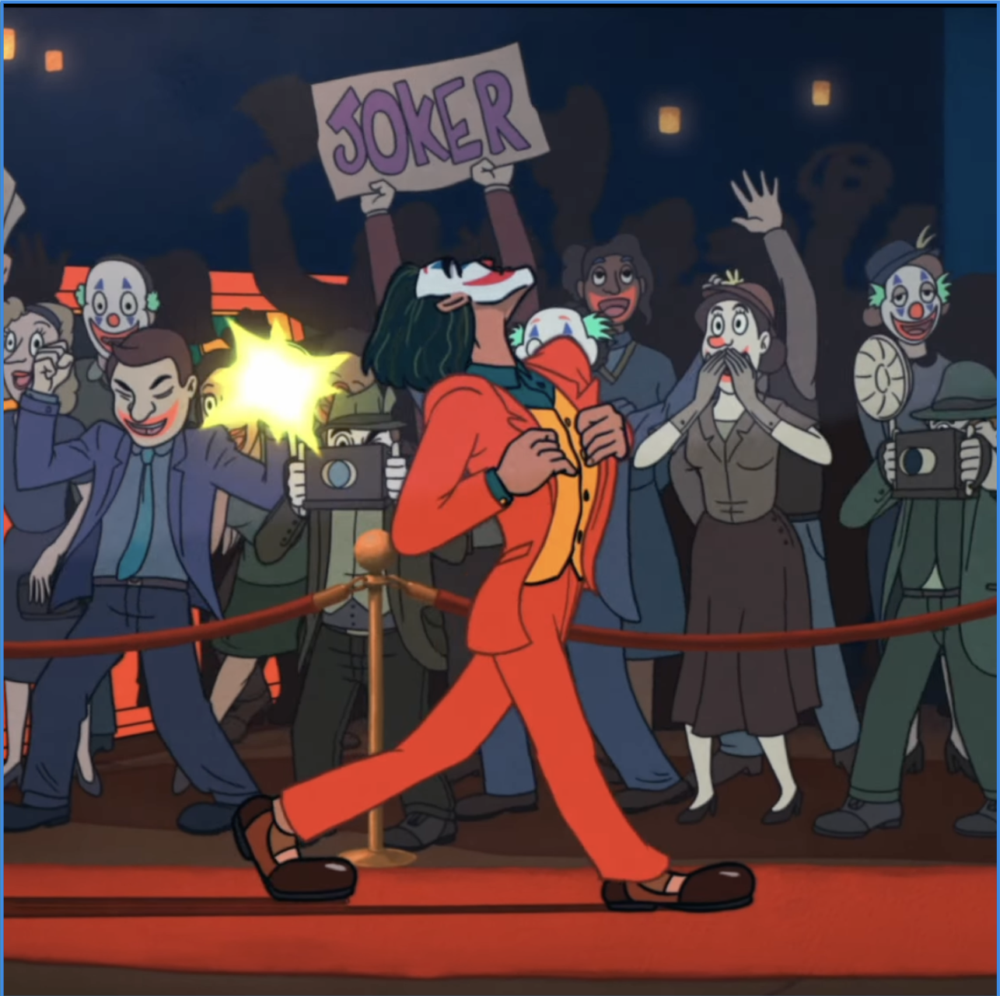
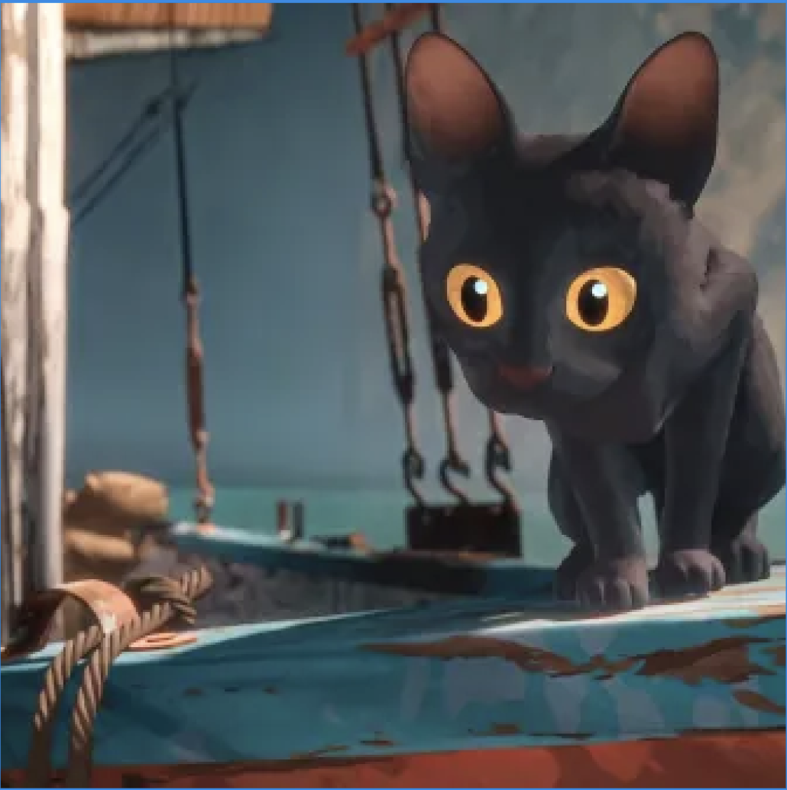

In Joker: Folie à Deux, il regista ha scelto di includere un cortometraggio animato, mostrando il potenziale espressivo di questa tecnica.
Flow è un esempio di come l'animazione possa superare le barriere linguistiche, utilizzando solo immagini e musica.
